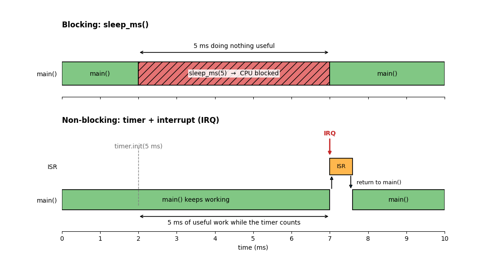
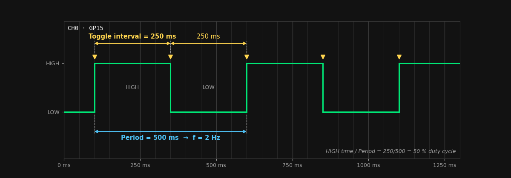
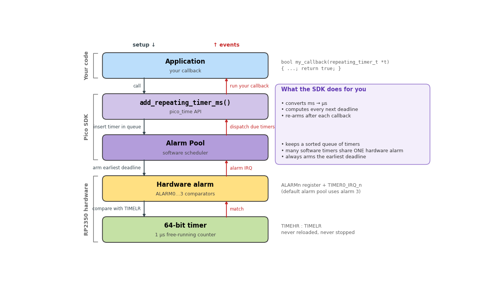
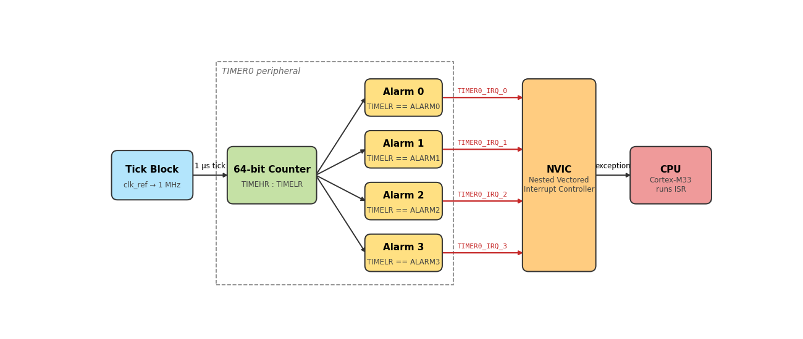
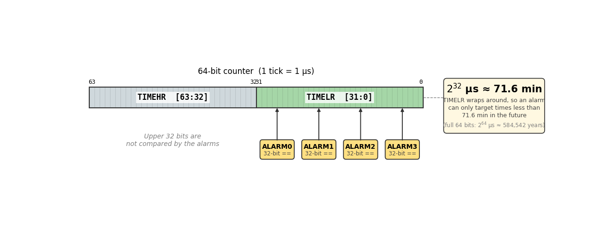
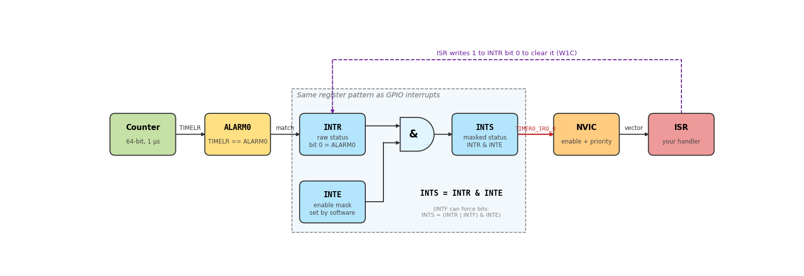
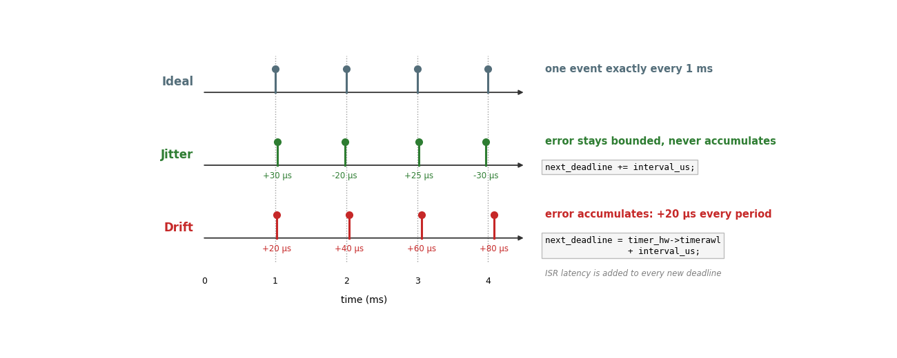

Timers
Until now, when we wanted to wait before doing something again, we could write code such as:
This works, but the main program flow is blocked while sleep_ms() is waiting. Interrupts can still occur, but the statements after sleep_ms() cannot execute until the delay finishes.
What if we want the LED to blink while the microcontroller is also reading buttons, communicating through UART, or performing calculations?
That is one of the main reasons microcontrollers include hardware timers.
Learning objectives
By the end of this topic you should be able to:
- Explain the difference between a blocking delay and a timer-based event.
- Relate period, frequency, tick, resolution, latency, jitter, and drift to measured waveforms.
- Use a Pico SDK repeating timer and verify its behavior with an oscilloscope.
- Explain the timer and hardware-alarm architecture of the RP2350.
- Configure a hardware alarm and its interrupt using registers.
- Explain why periodic events should normally be scheduled using absolute/cumulative deadlines.
- Recognize when a dedicated peripheral such as PWM is more appropriate than repeatedly interrupting the CPU.
1. Blocking delays vs timer events
A delay and a timer can produce the same visible result, but they organize the CPU very differently.
| Method | Main program flow | Periodic work | Typical use |
|---|---|---|---|
sleep_ms() |
Blocked until the delay finishes | Simple | Sequential waits |
| Polling the current time | Continues, but must repeatedly check | Possible | Simple cooperative loops |
| Timer + interrupt | Continues until an event occurs | Very good | Periodic tasks and deadlines |
| Dedicated peripheral | CPU involvement can be minimal | Excellent | PWM, communication, DMA, etc. |

Figure 1. sleep_ms() blocks the sequential flow of main(), while a timer can count independently and interrupt the CPU only when the event is due.
2. Basic timing terminology
Period and frequency
The period \(T\) is the time between repeating events.
The frequency \(f\) is the number of repetitions per second.
For example, an event every 250 ms has:
However, be careful with a GPIO that is toggled every 250 ms:
The GPIO changes state every 250 ms, but one complete HIGH + LOW cycle takes:
so the signal frequency is:
This distinction will become important when we study PWM.

Figure 2. Toggling a GPIO every 250 ms produces a 500 ms waveform period, or 2 Hz.
Tick and resolution
A digital timer does not represent continuous time. It advances in discrete steps called ticks.
If one tick represents 1 µs:
then the timer has a time resolution of approximately 1 µs.
Latency, jitter, and drift
- Latency: delay between the ideal event time and when the CPU actually begins servicing it.
- Jitter: variation in that latency from one event to another.
- Drift: accumulated timing error that causes repeated events to progressively move away from the intended schedule.
These are different problems. A periodic system can have some jitter without accumulating long-term drift.
Overflow / wrap-around
A fixed-width counter eventually reaches its maximum value and wraps back to zero.
For an unsigned 32-bit value:
Wrap-around is normal behavior in embedded systems and does not automatically mean the timer failed.
3. First approach: Pico SDK repeating timers
The Pico SDK provides a high-level timing API. A repeating timer executes a callback periodically without blocking the main loop.
#include "pico/stdlib.h"
#include "pico/time.h"
#define LED_PIN PICO_DEFAULT_LED_PIN
#define TOGGLE_MS 250
static repeating_timer_t blink_timer;
bool blink_callback(repeating_timer_t *rt) {
static bool led_state = false;
led_state = !led_state;
gpio_put(LED_PIN, led_state);
return true; // true = continue repeating
}
int main() {
stdio_init_all();
gpio_init(LED_PIN);
gpio_set_dir(LED_PIN, GPIO_OUT);
// A negative delay schedules the callbacks relative to their start times.
add_repeating_timer_ms(-TOGGLE_MS, blink_callback, NULL, &blink_timer);
while (true) {
// The main program is free to perform other work here.
tight_loop_contents();
}
}
What happened?
The important parts are:
which schedules the event, and:
which contains the code executed each time the timer expires.
The callback should normally be short. Avoid long calculations, blocking delays, or unnecessary printing inside timing callbacks and ISRs.
Positive vs negative repeat delay
The SDK gives the sign of the delay a useful meaning:
+250 ms: wait 250 ms after one callback finishes before starting the next one.-250 ms: aim for 250 ms between callback start times.
For periodic events, the negative form is often closer to the timing behavior we want.
Positive delay
callback callback callback
|---work---|----250 ms----|---work---|----250 ms---->
Negative delay
callback callback callback
|----------------250 ms-------------------|
|----------------250 ms-------------------|
The high-level call is convenient because several layers are working underneath it:

Figure 3. A repeating timer is a software abstraction. The SDK manages alarm pools and ultimately uses a hardware alarm backed by the 64-bit timer.
4. In-class laboratory — Make timing visible with an oscilloscope
The goal of this activity is to connect the code you write with a physical waveform that you can measure. Instead of only seeing an LED blink, you will predict the timing, measure it with the oscilloscope, change one variable at a time, and explain what changed.
Equipment and connections
Use two GPIO pins so that the oscilloscope can observe both the timed output and, later, how long the callback is executing.
| Pico 2 signal | Oscilloscope | Purpose |
|---|---|---|
GP15 |
CH1 | Timed output |
GP14 |
CH2 | Callback execution marker |
GND |
Probe ground | Common reference |
Do not connect the oscilloscope ground clip to a GPIO pin. Connect it only to a Pico GND pin.
Part A — Predict first, measure second
Start with the following program. The timer toggles GP15 every 250 ms.
#include "pico/stdlib.h"
#include "pico/time.h"
#define TEST_PIN 15
#define TOGGLE_MS 250
static repeating_timer_t timer;
static bool timer_callback(repeating_timer_t *rt) {
static bool state = false;
state = !state;
gpio_put(TEST_PIN, state);
return true;
}
int main() {
gpio_init(TEST_PIN);
gpio_set_dir(TEST_PIN, GPIO_OUT);
gpio_put(TEST_PIN, 0);
add_repeating_timer_ms(-TOGGLE_MS, timer_callback, NULL, &timer);
while (true) {
// main() remains available for other work.
tight_loop_contents();
}
}
Before connecting the oscilloscope, calculate the expected:
- time between GPIO state changes,
- HIGH time,
- LOW time,
- complete waveform period,
- frequency,
- duty cycle.
Then measure CH1. A time base around 100 ms/div is a reasonable starting point for this first signal.
Record your results:
| Quantity | Predicted | Measured | Difference |
|---|---|---|---|
| Toggle interval | |||
| HIGH time | |||
| LOW time | |||
| Period | |||
| Frequency | |||
| Duty cycle |
Part B — Change only one variable
Change only TOGGLE_MS and repeat the measurement.
Suggested values:
For each value, predict the new frequency before running the code.
Observation questions:
- Does
TOGGLE_MSrepresent the waveform period? - What mathematical relationship connects
TOGGLE_MSand the measured signal frequency? - Does changing
TOGGLE_MSchange the duty cycle? Why? - At what point does observing the signal with an LED become less useful than observing it with an oscilloscope?
You should be able to obtain:
or, when TOGGLE_MS is expressed in milliseconds:
Part C — Can the callback duration change the timing?
Now use CH2 to mark the time spent inside the callback. The callback raises GP14 when it starts and lowers it immediately before returning.
#include "pico/stdlib.h"
#include "pico/time.h"
#define TEST_PIN 15
#define CALLBACK_MARK_PIN 14
#define TIMER_DELAY_MS 100
#define WORK_US 20000
#define USE_NEGATIVE_DELAY 1
static repeating_timer_t timer;
static bool timer_callback(repeating_timer_t *rt) {
static bool state = false;
gpio_put(CALLBACK_MARK_PIN, 1);
state = !state;
gpio_put(TEST_PIN, state);
// Intentional workload for the experiment.
busy_wait_us_32(WORK_US);
gpio_put(CALLBACK_MARK_PIN, 0);
return true;
}
int main() {
gpio_init(TEST_PIN);
gpio_set_dir(TEST_PIN, GPIO_OUT);
gpio_init(CALLBACK_MARK_PIN);
gpio_set_dir(CALLBACK_MARK_PIN, GPIO_OUT);
int32_t delay_ms = USE_NEGATIVE_DELAY ? -TIMER_DELAY_MS : TIMER_DELAY_MS;
add_repeating_timer_ms(delay_ms, timer_callback, NULL, &timer);
while (true) {
tight_loop_contents();
}
}
On the oscilloscope:
- CH1 shows the timed output.
- CH2 shows approximately how long the callback occupies the CPU.
Perform these experiments:
| Experiment | USE_NEGATIVE_DELAY |
WORK_US |
What to observe |
|---|---|---|---|
| C1 | 1 |
0 |
Baseline interval |
| C2 | 1 |
20000 |
Callback gets longer, intended interval stays referenced to callback start |
| C3 | 0 |
20000 |
Callback execution time is added before the next delay begins |
| C4 | 1 |
80000 |
Callback occupies most of the available interval |
For C2 and C3, predict the CH1 toggle interval before measuring it.
Observation questions:
- What does the width of the CH2 pulse represent?
- What changes when the repeating-timer delay changes from negative to positive?
- Why should callbacks and ISRs normally be short?
- What do you expect if the callback takes longer than the requested interval?
- Does a longer callback necessarily change the HIGH/LOW duty cycle of CH1? Explain from the measured edges rather than from the source code alone.
Part D — Make main() visibly do something else
Keep the timer on GP15, but use main() to monitor a push button or perform another independent task. The timer callback must not read the button.
Requirements:
- GP15 must continue changing at the same measured interval.
main()must detect button presses while the timed waveform continues.- Do not use
sleep_ms()in the button-handling path.
Use the oscilloscope to verify that interacting with the button does not significantly change the timer waveform.
Think about this before moving on:
If the timed waveform is being generated without stopping
main(), what piece of hardware is actually keeping track of the time?
5. What hardware is underneath the SDK?
The RP2350 contains two 64-bit timer peripherals. Each timer has four hardware alarms.
By default, the timer receives a tick generated by the RP2350 tick block, normally configured so that:
The counter continuously increases. It does not restart every time an alarm fires.

Figure 4. The tick block drives the free-running 64-bit timer. Each hardware alarm can raise its own IRQ toward the NVIC and CPU.
A hardware alarm works approximately like this:
- Read the current timer value.
- Calculate a future deadline.
- Write that deadline into an alarm register.
- The hardware continues counting independently.
- When the counter matches the alarm, the hardware raises an interrupt.
- The ISR clears the interrupt and optionally schedules another deadline.
6. 64-bit timer, 32-bit alarms
The timer itself is 64 bits wide:

Figure 5. The timer is 64 bits wide, but each hardware alarm compares against the lower 32 bits.
The hardware alarms compare against the lower 32 bits of the timer.
With the normal 1 µs tick, the maximum directly programmable distance into the future is approximately:
This does not mean that the 64-bit timer resets after 71.6 minutes. Only the lower 32-bit comparison wraps around.
7. From the SDK to the registers
The SDK hides several hardware steps. At the register level we must configure the path ourselves:

Figure 6. A match sets INTR; INTE determines whether that source is enabled; INTS is the masked status that reaches the timer IRQ and NVIC.
Three timer interrupt registers are especially useful:
| Register | Meaning |
|---|---|
intr |
Raw interrupt flags: which alarm fired? |
inte |
Interrupt enable: which alarms are allowed to generate an IRQ? |
ints |
Masked interrupt status (intr after applying inte) |
The intr alarm bits are write-one-to-clear (W1C).
That means that to clear alarm 0 we write a 1 to bit 0:
This may feel backwards at first: writing a 1 clears the corresponding interrupt flag because that is how the register is defined by the hardware.
8. Low-level periodic blink using a hardware alarm
The following example recreates the repeating blink without using add_repeating_timer_ms().
#include "pico/stdlib.h"
#include "hardware/irq.h"
#include "hardware/timer.h"
#include "hardware/structs/timer.h"
#include "hardware/structs/sio.h"
#define LED_PIN PICO_DEFAULT_LED_PIN
#define ALARM_NUM 0
#define TOGGLE_US 250000u
#define ALARM_IRQ timer_hardware_alarm_get_irq_num(timer_hw, ALARM_NUM)
static volatile uint32_t next_deadline;
static void on_alarm_irq(void) {
// 1. Clear the interrupt flag.
// TIMER INTR is write-one-to-clear (W1C).
timer_hw->intr = 1u << ALARM_NUM;
// 2. Perform a short timed action.
sio_hw->gpio_togl = 1u << LED_PIN;
// 3. Schedule the next event using a cumulative deadline.
next_deadline += TOGGLE_US;
timer_hw->alarm[ALARM_NUM] = next_deadline;
}
int main() {
gpio_init(LED_PIN);
gpio_set_dir(LED_PIN, GPIO_OUT);
gpio_put(LED_PIN, 0);
// Cooperatively reserve hardware alarm 0.
hardware_alarm_claim(ALARM_NUM);
// Connect our ISR to this alarm's IRQ.
irq_set_exclusive_handler(ALARM_IRQ, on_alarm_irq);
// Clear any old pending flag before enabling the interrupt.
timer_hw->intr = 1u << ALARM_NUM;
// Enable this alarm as an interrupt source inside the TIMER peripheral.
hw_set_bits(&timer_hw->inte, 1u << ALARM_NUM);
// Enable the IRQ in the NVIC.
irq_set_enabled(ALARM_IRQ, true);
// timerawl = lower 32 bits of the running timer.
uint32_t now_us = timer_hw->timerawl;
// First absolute deadline.
next_deadline = now_us + TOGGLE_US;
timer_hw->alarm[ALARM_NUM] = next_deadline;
while (true) {
// Timed blinking occurs in the ISR.
// main() remains available for other work.
tight_loop_contents();
}
}
Follow the interrupt path
When this line executes:
the alarm becomes armed.
When the lower 32 bits of the timer reach that value:
Timer counter
↓
ALARM compare
↓
intr bit becomes 1
↓
inte allows the interrupt
↓
IRQ reaches the NVIC
↓
on_alarm_irq()
This is the same interrupt concept used previously with GPIO, but the interrupt source is now a timer peripheral instead of an input pin.
9. Why use cumulative deadlines?
Consider two possible ways of scheduling the next event.
Method A — schedule from the end of the ISR
Suppose the interrupt should occur every 1000 µs, but the ISR and interrupt latency together introduce 20 µs before the next alarm is programmed.
The events could become:
The error accumulates. This is drift.
Method B — cumulative deadline
Instead, keep track of the ideal timeline:
Now the intended deadlines remain:
The ISR may still start a few microseconds late because of interrupt latency. That produces jitter, but the schedule does not continuously move away from the intended timing.

Figure 7. Jitter varies around the desired timeline; drift progressively moves the schedule away from that timeline.
10. Hardware alarms vs software timers
A common misconception is:
"If one RP2350 timer has four hardware alarms, can I only create four timers?"
No.
The Pico SDK can manage multiple software alarms and repeating timers using an alarm pool backed by a hardware alarm.
The abstraction layers shown earlier in Figure 3 are important here: many software timers can share an alarm pool, while the alarm pool schedules the earliest required deadline on a hardware alarm.
The hardware alarm is used to wake the software at the next required deadline. The SDK then determines which software callback should run and schedules the following deadline.
This is one reason high-level APIs are convenient: they allow many timed software events without manually assigning one hardware alarm to each task.
11. One-shot vs periodic events
A one-shot event executes once:
A periodic event repeats:
At the hardware-alarm level, an alarm fires once and must be programmed again for the next deadline.
Therefore, our ISR creates periodic behavior by repeatedly doing:
12. Advanced: timer source on RP2350
By default, the RP2350 timer uses the normal tick source, typically configured for a 1 µs tick.
The RP2350 can also configure the timer to count clk_sys cycles instead. This provides much finer resolution, but the timer values now depend on the system clock frequency.
For example, if:
then one clock cycle is:
This can be useful for specialized high-resolution measurements.
Important: the Pico SDK timing functions expect the default hardware timer to remain a monotonically increasing microsecond timebase. Do not change the source of the timer used by
pico_timeunless you intentionally isolate your implementation from those SDK timing functions.
For this course, we will normally keep:
13. General timer architecture in other microcontrollers
The RP2350 timer is not the only timer architecture you will encounter.
Many microcontrollers use a structure similar to:
For this type of timer:
and a counter that repeats after TOP + 1 counts has approximately:
This architecture will become especially useful in the next topic when we study PWM.
Do not confuse this generic prescaler + TOP model with the RP2350 system timer used in the examples above. The RP2350 system timer is a continuously running 64-bit timebase with compare alarms.
For the following exercises connect:
- GP15 → Oscilloscope CH1
- GND → Oscilloscope GND
The goal is not only to make the LED blink, but to measure the timing generated by the program.
Exercises
Exercise 1 — Measure a repeating timer
Start with the following code:
#include <stdio.h>
#include "pico/stdlib.h"
#include "pico/time.h"
#define SIGNAL_PIN 15
#define TOGGLE_MS 250
bool timer_callback(repeating_timer_t *rt) {
static bool state = false;
state = !state;
gpio_put(SIGNAL_PIN, state);
return true;
}
int main() {
stdio_init_all();
gpio_init(SIGNAL_PIN);
gpio_set_dir(SIGNAL_PIN, GPIO_OUT);
repeating_timer_t timer;
add_repeating_timer_ms(
-TOGGLE_MS,
timer_callback,
NULL,
&timer
);
while (true) {
printf("Main is still running\n");
sleep_ms(1000);
}
}
Before measuring
Predict:
- How often does the GPIO change state?
- What will be the period of the waveform?
- What will be its frequency?
- What duty cycle do you expect?
For:
calculate:
Measure
Using the oscilloscope, measure:
- HIGH time
- LOW time
- Period
- Frequency
Compare the measured values with your calculations.
Compare
Question
Is TOGGLE_MS the period of the output signal?
Experiment
Change:
Before running the program, predict the new:
- Period
- Frequency
Then verify your prediction with the oscilloscope.
Finally try one additional value of your choice.
What should you conclude?
For a GPIO that toggles every \(t_{toggle}\):
and therefore:
Exercise 2 — Does callback execution time matter?
Now we will intentionally make the callback take some time.
Use:
and modify the callback:
bool timer_callback(repeating_timer_t *rt) {
static bool state = false;
state = !state;
gpio_put(SIGNAL_PIN, state);
busy_wait_us_32(WORK_US);
return true;
}
First use:
Observe
Measure the time between GPIO transitions.
Then change only:
to:
and measure again.
Record:
| Configuration | Expected interval | Measured interval |
|---|---|---|
-100 ms |
||
+100 ms |
Explain
Why are the measurements different?
A negative delay schedules callbacks relative to their expected start time:
A positive delay waits until the callback finishes before starting the next delay:
so the execution time of the callback becomes part of the period.
Important
Periodic real-time behavior normally requires us to schedule events relative to a timeline, not relative to when the previous task finished.